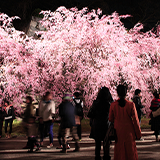
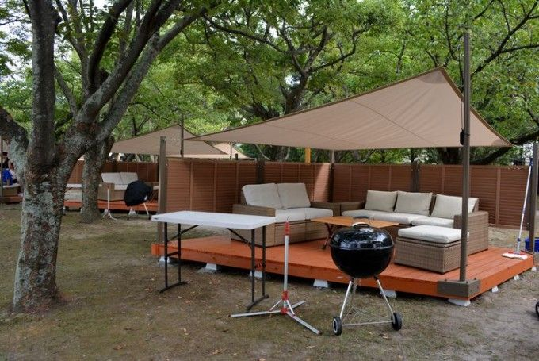
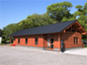
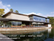

グルメBBQ
福岡県内の町や村から、自慢の特産品・農産物・加工品など、おいしいものが大集合！
福岡の各町村自慢のグルメ・特産品・農産物・加工品が一堂に集合！
町村によるご当地ステージイベントも同時開催！

同時開催！「海外福岡県人会フェア」
世界の料理や踊り、音楽を楽しもう！
南米を中心とした各国の料理や物産を販売！特設ステージではサンバやコロンビアの伝統的な踊りを披露！

福岡市のほぼ中央に位置する公園で「日本さくら名所100選」に選ばれている場所


kandel jamuna